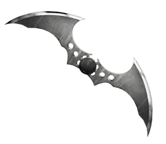

Au nom de ses parents assassinés, Bruce Wayne mène une guerre éternelle contre les criminels
de
Gotham City.
Il est vengeur. Il est la nuit.
BATMAN AU CINÉMA
Le personnage de Batman est un super héros de l’univers de DC Comics. Il a été créé par le dessinateur Bob Kane et le scénariste Bill Finger et apparaît pour la première fois dans le comic book Detective comics en 1939. Batman se différencie de Superman, alors héros majeur de DC, car il n’a aucun pouvoir. Il sera porté au cinema pour la première fois en 1943 par Lewis Wilson et bénéficiera de nombreux reboot, donnant l’occasion à de multiples acteurs d’interpréter l’homme chauve-souris. Voici les trois derniers :

(2022)
(2006 - 2008 - 2012)
(2016 2017/2020 - 2023)
NÉMÉSIS 
Batman souhaite éradiquer la criminalité de Gotham. C’est purquoi, il affrontera la plupart du temps, des vilains sans capacités surnaturelles mais particulièrement violents ou psychopathes. Avec son introduction dans la Justice League il aura l’occasion de se mesurer à des antagonistes qui défient l’imagination et les lois de la physique. Parmi les derniers ennemis emblématiques que nous avons pu voir au cinéma, on retrouve :
(2022)
(2008)
(2022)
ALLIÉS
Alfred est le majordome des Wayne. A leur mort il s’occupe de l’éducation du jeune Bruce avant de l’assister dans son rôle du Batman. Ce dernier rencontrera Catwoman dès le premier numéro des aventures de l’homme chauve-souris en 1940. Tantôt ennemie tantôt alliée la jeune femme fatale fera tourner la tête de Batman à maintes reprises. Du côté de la police, Bruce pourra compter sur l’aide infaillible de James Gordon, “Jim”, qui désire lui aussi nettoyer sa ville de la criminalité qui y règne.
(2006 - 2008 - 2012)
(2008)
(2014-2019)
JUSTICE LEAGUE
Lorsque la Terre est menacée les plus grands super-héros s’allient pour la protéger. Ils doivent cependant apprendre à se faire confiance mutuellement et à faire équipe ce qui ne sera pas chose aisée. Ensemble ils forment la Justice League, les plus grands super-héros de la Terre, ceux vers qui le monde entier se tourne lorsque les menaces extraterrestres ou surnaturelles menacent son existence
MULTIMÉDIA

Batman Begins
Le jeune Bruce Wayne assiste impuissant au meurtre de ses parents. Profondément traumatisé, il grandit obnubilé par un désir de vengeance. La Ligue des ombres, une secte de guerriers ninja dirigée par Ra's al Ghul, se chargera de son entraînement. De retour chez lui à Gotham, avec l'aide de son majordome Alfred Pennyworth, Bruce Wayne se lance alors dans la lutte contre le crime sous le nom de Batman.
PRENONS CONTACT
« La seule façon raisonnable de vivre en ce bas monde, c'est en dehors des règles. »
- Le Joker à Batman (2008)